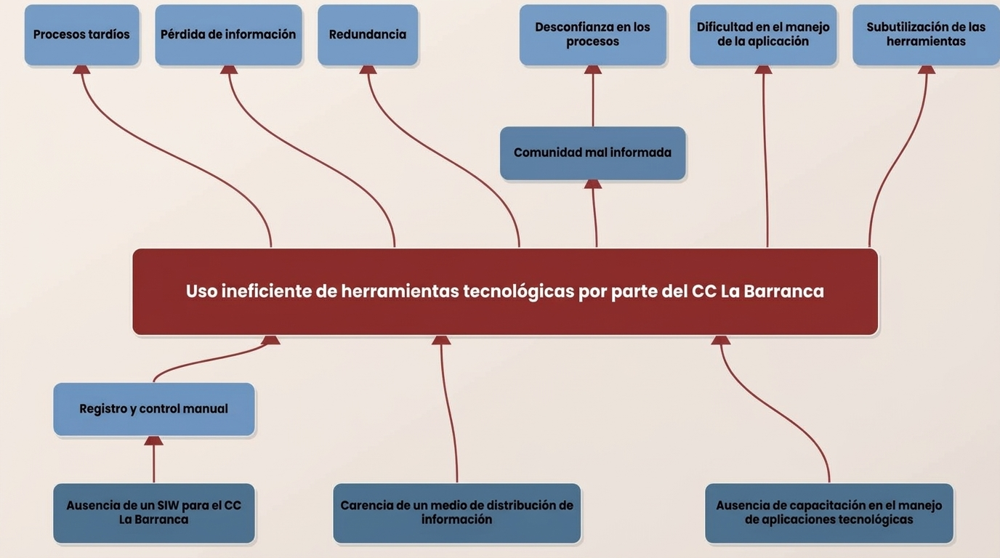
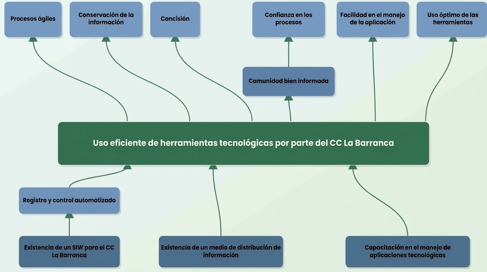
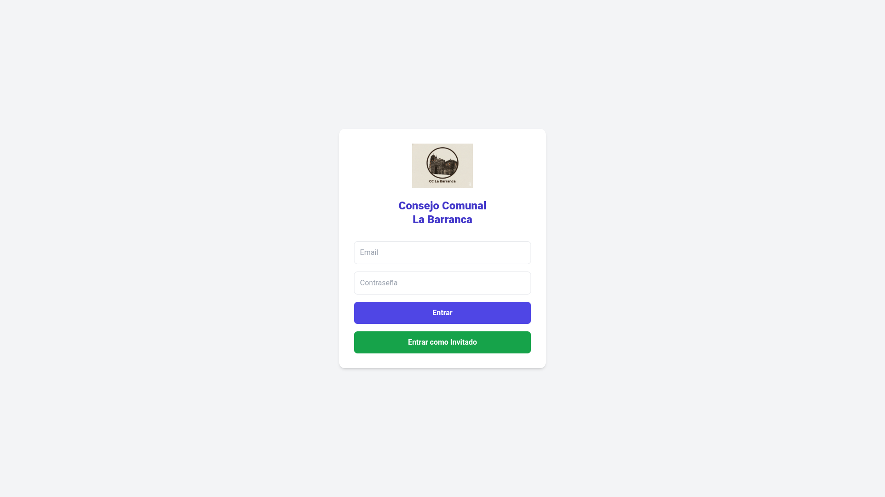
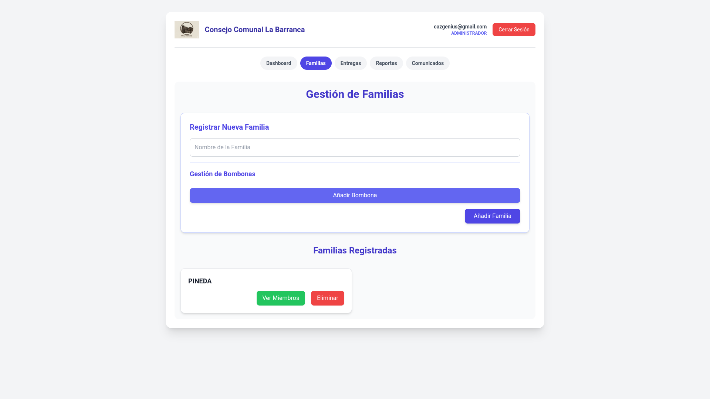
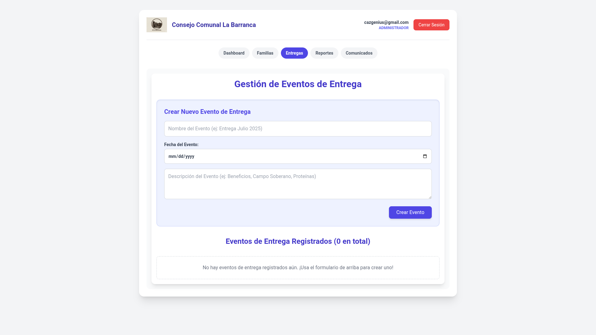
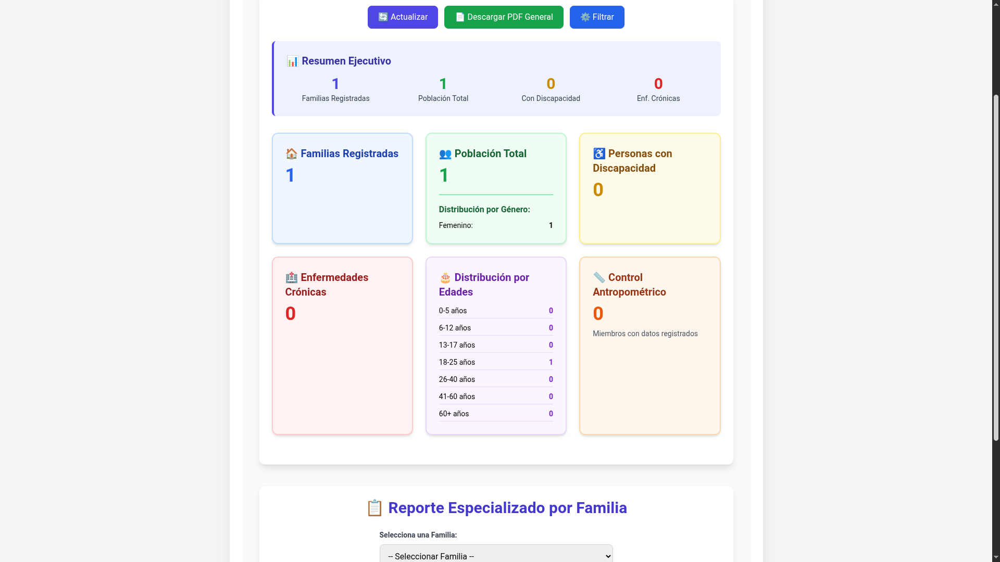
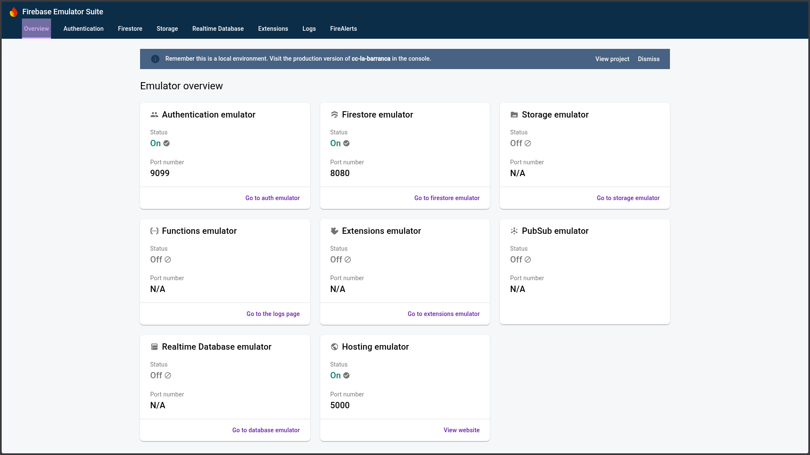

Contenido de la defensa
Realidad operativa del CC La Barranca, jerarquización cuantitativa y árboles de problemas/objetivos.
Objetivo general, específicos, justificación teórica/técnica y marco legal (CRBV, LOCTI, PNFI).
Investigación de campo etnográfica y la Bitácora de Cruce como puente formal hacia el desarrollo.
Pilares Logic, Oversight, Layering, iteraciones, cronograma y roles del equipo.
React 19 SPA + Firebase BaaS, modelo NoSQL en Firestore, RBAC y mitigación de amenazas STRIDE.
Tour por los módulos reales, suite de pruebas Jest (43/43), pruebas UAT con la vocera y costos del proyecto.
Consejo Comunal "La Barranca"
Ubicación: Sector La Barranca, Parroquia Matriz, Municipio Trujillo, Estado Trujillo.
Instancia de articulación y participación popular regida por la Ley Orgánica de los Consejos Comunales. Su misión es la autogestión, registro censal y distribución equitativa de beneficios sociales para elevar la calidad de vida de sus habitantes.
Se compone de la Unidad Ejecutiva, Unidad Administrativa y Financiera y Contraloría Social, coordinadas directamente por la Vocera Principal y los líderes de calle.

Uso ineficiente de herramientas tecnológicas
La gestión comunitaria dependía exclusivamente de registros físicos en cuadernos y anotaciones manuales, generando severas limitaciones operativas:
Deterioro o extravío de hojas censales; datos desactualizados de los integrantes familiares sin historial de cambios.
Imposibilidad de verificar qué familias recibieron bolsas CLAP o ayudas en jornadas específicas.
Voceros dedicaban horas a transcribir listas manualmente para cada evento y asamblea.
Comunicados perdidos en cadenas de mensajería; barreras para una verdadera contraloría social.
Priorización y selección del problema central
Conforme al Cuadro 1 y 2 de la investigación, se evaluaron los problemas detectados en función de su Magnitud y Posibilidad de Solución (Escala 1 a 3):
| Código | Problema Percibido | Magnitud | Posib. Solución | Puntuación | Estado |
|---|---|---|---|---|---|
| P1 | Falta de herramientas tecnológicas accesibles para voceros | 1 (Bajo) | 1 (Bajo) | 2 pts | Descartado |
| P2 | Falta de capacitación en manejo de aplicaciones tecnológicas | 2 (Medio) | 2 (Medio) | 4 pts | Secundario |
| P3 | Ausencia de mecanismos de retroalimentación comunitaria | 2 (Medio) | 2 (Medio) | 4 pts | Secundario |
| P4 | Falta de un sistema de información web para la gestión administrativa | 3 (Alto) | 3 (Alto) | 6 pts | Problema Central Seleccionado |
Jerarquía resultante: P4 (6 pts) > P2 = P3 (4 pts) > P1 (2 pts). El costo fue homogéneamente accesible, constituyendo P4 el factor determinante.
Árbol de Problemas y de Objetivos


De cada causa raíz diagnosticada a la izquierda se derivó un componente operativo y un objetivo de desarrollo a la derecha.
Matriz de Decisión Multicriterio
Se ponderaron tres alternativas viables bajo cuatro criterios ponderados de 1 a 5 (Cuadro 4 de la memoria):
| Alternativa | Tiempo | Costo | Impacto | Factibilidad | Total | Decisión |
|---|---|---|---|---|---|---|
| Sistema de Información Web (SIW) | 3 | 2 | 5 | 5 | 15 pts | Seleccionada (Mayor impacto y factibilidad) |
| Red Social Comunitaria CC | 5 | 3 | 5 | 1 | 14 pts | Inviable por baja factibilidad en el contexto |
| Capacitación ofimática a voceros | 3 | 2 | 5 | 3 | 13 pts | No resuelve la dispersión de datos ni la trazabilidad |
Conclusión del análisis: El SIW ofrece acceso ubicuo sin requerir servidores locales ni mantenimiento de infraestructura física de alto costo en la comunidad.
Objetivos de la Investigación
Desarrollar un Sistema de Información Web para la gestión administrativa del Consejo Comunal "La Barranca", que automatice el registro de familias, el control de la distribución de beneficios y la generación de reportes estadísticos, aplicando los marcos metodológicos propios LAZY y LOL.
Determinar los requerimientos funcionales y no funcionales mediante el marco analítico LAZY y la Bitácora de Cruce.
Diseñar la arquitectura lógica, el modelo documental NoSQL y la seguridad del sistema aplicando el principio Logic.
Construir, probar y desplegar incrementalmente el software bajo los principios Layering y Oversight.
Justificación e impacto social
Se fundamenta en la Teoría General de Sistemas (Bertalanffy, 1968) y la conceptualización de Sistemas de Información (Laudon y Laudon, 2012) como engranajes de entrada, procesamiento y salida para la toma de decisiones certeras.
Adopción del stack React 19 + Firebase (BaaS). Permite interfaces reactivas, persistencia NoSQL en tiempo real, autenticación delegada y alojamiento de coste cero bajo el plan gratuito de Google.
Empodera directamente a más de centenares de familias del sector La Barranca, garantizando equidad en asignación de insumos, transparencia en rendición de cuentas y auditoría ciudadana.
Fundamentación legal y vinculación PNFI
- Art. 102 y 103: Educación como derecho humano e igualdad de oportunidades.
- Art. 110: Interés público de la ciencia, la tecnología y los servicios de información como instrumentos de soberanía nacional.
- LOCTI (Arts. 1, 2, 5, 11): Aplicación de tecnologías para resolver necesidades populares.
- Ley Orgánica de los Consejos Comunales (2009): Principios de transparencia y contraloría social.
- Decreto Ley de Intercambio Electrónico de Datos (2012).
Línea de Investigación: Sistemas de Información y Modelado de Datos.
Área de Conocimiento: Programación e Ingeniería del Software (Unidades: Base de Datos, Programación e Ing. de Software).
Investigación de campo y técnicas empíricas
Investigación de campo estructurada por el marco propio LAZY, orientada a la creación de una Tecnología Social (ITS, 2004) contextualizada a la realidad comunal venezolana.
Descriptiva (Arias, 2012) con enfoque mixto: cualitativo en la inmersión diagnóstica y cuantitativo en la captura de métricas del censo familiar.
Observación Directa: Guía de campo y listas de chequeo.
Entrevistas no estructuradas: Conversaciones directas con voceros.
Análisis Documental: Revisión de censos físicos.
Las cuatro fases del marco LAZY
Propuesto por Morales (2026) para cerrar la brecha entre el trabajo etnográfico comunitario y la especificación de software:
La Bitácora de Cruce (Yield)
Documento de Transferencia Unificado: vincula cada Requisito Funcional (RF) directamente con su Requisito No Funcional (RNF) asociado:
| ID | Módulo | Requisito Funcional (RF) | Requisito No Funcional (RNF) Asociado |
|---|---|---|---|
| YLD-00 | Autenticación | Acceso vía correo/clave y modo invitado. Validación de roles en servidor. | Seguridad: Rechazo de peticiones no autenticadas en Firestore. |
| YLD-01 | Gestión de Familias | Registro integral de núcleo y miembros; no duplicidad de cédula. | Usabilidad: Persistencia en vivo sin recargas de página. |
| YLD-02 | Gestión de Eventos | Programación de jornadas comunitarias con fecha y detalle. | Seguridad: Restricción exclusiva a roles gestores (role en users/{uid}). |
| YLD-03 | Registro de Beneficios | Asignación de recepción ligando familia, receptor y evento. | Trazabilidad: Timestamp de servidor (inmutable por cliente). |
| YLD-04 | Constancias | Emisión de comprobantes y actas de jornada descargables. | Integridad: Datos derivados directamente de receipts. |
| YLD-05 | Reportes | Cálculo demográfico, género y vulnerabilidad en tiempo real. | Rendimiento: Sincronización reactiva mediante onSnapshot. |
| YLD-06 | Comunicados | Publicación de avisos comunitarios con interacción abierta. | Disponibilidad: Lectura pública libre sin autenticación. |
¿Por qué LOL frente a metodologías tradicionales?
- Diseñadas para corporaciones con presupuestos altos y grandes equipos.
- Generan burocracia documental inaccesible para la comunidad.
- Provocan desajuste entre el diagnóstico social y la ejecución de código.
- Adaptación ágil, pragmática y ligera para el contexto comunal venezolano.
- Enfoque de Complejidad Diferida: decisiones técnicas justificadas.
- Supervisión continua (Oversight) integrando auditoría de pares y pruebas.
Los Tres Pilares Metodológicos
Decisiones deliberadas y fundamentadas. Antes de codificar, se diseña el modelo mental del sistema. Justificación del stack React + Firebase para evitar costos de infraestructura.
Supervisión continua y auditoría técnica. Pruebas unitarias, suites automatizadas Jest, validación de reglas de base de datos y verificación de requerimientos en cada fase.
Construcción incremental por capas. Cada módulo se apoya estrictamente sobre una capa ya estabilizada y testeada, garantizando entregables de valor funcional permanente.
Distribución de responsabilidades del equipo
Organización del equipo de desarrollo según los tres principios de LOL (Cuadro 11 de la tesis):
| Componente LOL | Participante | Responsabilidad Específica |
|---|---|---|
| Logic | Gabriel Morales | Análisis técnico, selección de arquitectura, modelado del árbol NoSQL y diseño de la lógica del sistema. |
| Layering | Gabriel Morales | Construcción modular de la interfaz React, integración de servicios Firebase, componentes y despliegue. |
| Oversight (Auditores) | Richard Godoy & Josué Abrahan Ortuño | Auditoría de requerimientos de la Bitácora de Cruce, revisión de entregables por iteración, pruebas funcionales y validación con la comunidad. |
Cronograma y fases de iteración
18 días de desarrollo enfocado dentro del marco general de 60 días del proyecto socio-tecnológico:
Arquitectura Tecnológica del SIW-CC
- React 19: Arquitectura basada en componentes reactivos y hooks desacoplados.
- Tailwind CSS: Diseño responsivo adaptable a laptops y dispositivos móviles comunitarios.
- html2canvas + jsPDF: Renderizado y emisión de constancias oficiales descargables sin dependencias de servidor.
- Cloud Firestore: Base de datos NoSQL documental con sincronización reactiva en tiempo real.
- Firebase Auth: Gestión segura de sesiones por correo/clave y credenciales anónimas para invitados.
- Firebase Hosting: Entrega global de contenido estático mediante CDN seguro con SSL automático.
Principio de Complejidad Diferida: Cero costos de mantenimiento de servidores Linux propios, alta disponibilidad y soporte total dentro de la cuota gratuita (Spark Plan de Google).
Árbol Documental NoSQL en Cloud Firestore
/Consejo-Comunal-La-Barranca/data/
├── users/{userId} # Rol, email, datos del vocero
├── invitados/{guestId} # Sesión temporal ligera (anónima)
├── families/{familyId} # Núcleo: jefe de familia, dirección, vulnerabilidad
│ ├── members/{memberId} # Datos individuales: edad, cédula, salud
│ └── receipts/{receiptId} # Trazabilidad: deliveryId, timestamp
├── deliveries/{eventId} # Jornadas: nombre, fecha, tipo de beneficio
└── comunicados/{comunicadoId} # Avisos comunitarios públicos
└── comments/{commentId} # Retroalimentación comunitaria
¿Por qué receipts anida bajo families?
Porque la consulta prioritaria del Consejo Comunal es verificar "¿qué beneficios ha recibido esta familia históricamente?" en lugar de consultar la lista bruta del evento. El campo deliveryId preserva la integridad relacional sin duplicidad de datos.
Control de Acceso Basado en Roles (RBAC)
Diseño de permisos según la estructura organizativa comunitaria (Cuadro 10):
| Rol Organizacional | Mecanismo Auth | Nivel Técnico | Alcance Operativo |
|---|---|---|---|
| Administrador | Email / Password | role == 'administrador' |
Acceso total a todos los módulos y gestión de perfiles. |
| Vocera Principal | Email / Password | role == 'vocera_principal' |
Gestión de familias, eventos, constancias y estadísticas. |
| Líder de Calle | Email / Password | role == 'lider_de_calle' |
Actualización de fichas censales y verificación de entregas. |
| Invitado (Comunidad) | Autenticación Anónima | role == 'guest' |
Lectura de comunicados. Para comentar se exige cuenta verificada. |
El nivel técnico es el campo role del documento users/{uid}, y se evalúa en las reglas de Firestore (getUserRole()), no en el cliente. Las funciones isManagerRole() del frontend solo muestran u ocultan interfaz. La distinción entre roles gestores es estrictamente organizacional: todos operan bajo la función unificada de gestión para garantizar operatividad continua en la comunidad.
Reglas de Seguridad y Mitigación STRIDE
La seguridad no reside en el navegador del cliente; se evalúa rígidamente en los servidores de Google. Extracto de firestore.rules desplegado (el archivo completo está en el repositorio; aquí se omiten las ramas de comunicados, constancias y reportes):
// Helper que consulta el rol verificado en la base de datos (Backend-driven)
function getUserRole() {
return get(/databases/$(database)/documents/Consejo-Comunal-La-Barranca/data/users/$(request.auth.uid)).data.role;
}
function isManager() {
return request.auth != null &&
(getUserRole() == 'administrador' || getUserRole() == 'admin' ||
getUserRole() == 'lider_de_calle' || getUserRole() == 'vocera_principal');
}
// Censo Familiar y Entregas: Acceso blindado exclusivamente a gestores
match /families/{familyId} {
allow read, write: if isManager();
match /members/{memberId} { allow read, write: if isManager(); }
match /receipts/{receiptId} { allow read, write: if isManager(); }
}
// Mitigación STRIDE: Previene escalada de privilegios (Elevation of Privilege)
match /users/{userId} {
allow update: if request.auth != null && (
isManager() || (request.auth.uid == userId && request.resource.data.role == resource.data.role)
);
}
El usuario común no puede modificar su propio atributo role para elevar privilegios indebidamente.
Identidad visual y memoria histórica
Durante la fase Zoom de LAZY, la comunidad decidió que el logotipo institucional debía rescatar la Catedral de Trujillo en su fisonomía histórica original previa a la intervención municipal.
La fachada colonial original fue saqueada e incendiada durante la incursión del filibustero francés Grammont de la Mothe en 1678. La comunidad y la Vocera Principal optaron por plasmar la memoria histórica en su imagen en vez del repintado actual.
Autenticación y Acceso de Invitados

- Acceso administrativo mediante Email y Contraseña validados vía Firebase Auth.
- Botón "Entrar como Invitado" que genera una credencial anónima temporal en la colección
/invitados. - Manejo reactivo de errores: bloqueo de credenciales incorrectas y mensajes amigables.
Panel de Control (Dashboard) en vivo

- Contadores en vivo: Total de familias censadas, jornadas registradas y comunicados vigentes.
- Indicador de sincronización: Estado de conexión en tiempo real con Cloud Firestore.
- Año fiscal del censo: Control de período operativo del Consejo Comunal.
Censo Familiar Digital e Integrantes

- Registro del jefe de familia con dirección, teléfono y sector.
- Sub-formulario dinámico para agregar integrantes con edad, parentesco y datos de salud.
- Validación estricta de Cédula: Previene la duplicación de personas en múltiples núcleos familiares.
- Clasificación automática de vulnerabilidad social.
Gestión de Eventos y Trazabilidad de Entregas

- Planificación de jornadas de distribución (CLAP, gas, jornadas médicas).
- Búsqueda rápida por cédula o familia para confirmar la entrega del beneficio.
- Generación de recibo inmutable con timestamp del servidor para evitar adulteraciones posteriores.
Tablero Estadístico y Demografía en Tiempo Real

- Distribución de población por género y grupos etarios (niños, adultos mayores, jóvenes).
- Monitoreo de casos de vulnerabilidad médica y nutricional para atención prioritaria.
- Cálculo demográfico consolidado mediante el hook
useReportData(con métricas globales en vivo en Dashboard víaonSnapshot).
Comunicados Comunitarios y Constancias

- Comunicados Abiertos: lectura pública sin requerir cuenta; comentar exige cuenta verificada (email verificado o Google) y el comentario queda identificado con su
authorId. - Emisión de Constancias (YLD-04): Generación instantánea en PDF mediante
CertificateGenerator.jspara certificar quién recibió y quién no en cada jornada.
Firebase Emulator Suite (Entorno Local)

Conforme al principio Oversight, todos los cambios, scripts de migración y reglas de seguridad fueron validados exhaustivamente en puertos locales (Auth: 9099, Firestore: 8080, Hosting: 5000) antes de su publicación definitiva en producción.
Suite de Pruebas Automatizadas (Jest + RTL)
Supervisión continua implementada bajo el principio Oversight para blindar la interfaz y la lógica de validación:
43 tests repartidos en 8 suites: App.test.js, FamilyManagement.test.js, MemberManagement.test.js, DeliveryEvents.test.js, Dashboard.test.js, Comunicados.test.js, CertificateGenerator.test.js y validations.test.js (15 de validación). Aparte, 6 pruebas de reglas en el emulador (test/firestore.rules.test.js).
Pruebas de Aceptación del Usuario (UAT)
Sesiones de validación operativa realizadas con la Representante Comunitario (Mgtr. Evelyn Hackett) al cierre de cada iteración (Cuadro 12 de la memoria):
| Tarea Evaluada | Criterio de Éxito | Resultado | Valoración de la Vocera Principal |
|---|---|---|---|
| Registro de Núcleo Familiar | Familia y miembros agregados en una sola vista sin recarga. | Exitoso | Aprobado — "Rápido, claro y evita que se pierdan las hojas". |
| Creación de Jornada | Nueva jornada creada y listada cronológicamente. | Exitoso | Aprobado — "Muy intuitivo para los voceros". |
| Registro de Entrega | Búsqueda ágil y asignación de beneficio individual. | Exitoso | Aprobado — "Evita reclamos y duplicados en la entrega". |
| Emisión de Constancia | Descarga instantánea del acta oficial en formato PDF. | Exitoso | Aprobado — "Formato formal y listo para firmar". |
Presupuesto Económico del Proyecto
Estimación calculada a partir del esfuerzo real de ingeniería (60 días, 1 desarrollador líder y 2 auditores):
(240h a $8/h)
(40h a $8/h)
(12h a $8/h)
(Hardware + Dominio)
Modelo de Financiamiento: 100% autofinanciado por el equipo investigador, respaldado con el acompañamiento institucional y metodológico de la UPTTMBI. Costo recurrente de nube: $0 USD gracias a la arquitectura basada en el nivel gratuito de Firebase.
Cumplimiento de los Objetivos del Proyecto
Logrado: El marco LAZY demostró efectividad etnográfica, traduciendo la necesidad comunal en la Bitácora de Cruce sin recurrir a supuestos abstractos.
Logrado: Arquitectura SPA + BaaS estructurada bajo el pilar Logic, con un árbol NoSQL optimizado y control RBAC resistente a escalada de privilegios (reglas F1 sobre users e invitados).
Logrado: Desarrollo incremental por capas (Layering), validación continua (Oversight) y despliegue público en Firebase Hosting.
Objetivo General Alcanzado: Se sustituyó la fragilidad del registro en papel por una plataforma digital centralizada, ágil, segura y plenamente operativa.
Limitaciones de la Investigación
La investigación se circunscribe exclusivamente al Consejo Comunal "La Barranca" (Trujillo). Por tanto, los hallazgos describen un fenómeno situado y no pretenden generalización estadística universal.
La pertinencia de las pantallas y flujos fue validada con los voceros de esta comunidad concreta, sin contrastación directa simultánea en otros consejos comunales.
Se demostró la sólida correspondencia de LAZY y LOL en este contexto particular; validar su aplicabilidad genérica en los PSI/T requerirá réplicas futuras.
Recomendaciones del Proyecto
- Adoptar el SIW-CC como fuente única oficial para censos y entregas CLAP.
- Capacitar multiplicadores para mantener el censo al día ante mudanzas.
- Evolucionar la app hacia una PWA para zonas con internet intermitente.
- Incorporar alertas automáticas de jornadas y módulo de balance de fondos.
- Expandir pruebas automatizadas E2E.
- Difundir el proyecto como modelo de Tecnología Social replicable.
- Consolidar un repositorio de proyectos socio-tecnológicos institucionales.
Disponibilidad del Código Fuente
El código fuente íntegro del sistema, sus suites de pruebas y la configuración de seguridad se encuentran alojados y versionados públicamente para auditoría de la comunidad académica:
https://github.com/gmoralesm-dev/CC-La-Barranca